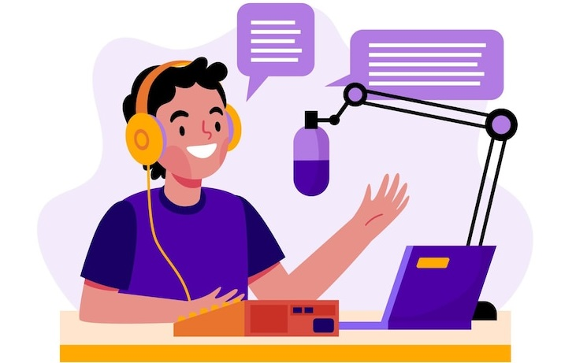

Grow as a Content Creator
Actionable insights and tools to help you succeed on YouTube, Instagram, and more.

Hello Future Content Creators 🎙️
Tools
🧠 AI Video Hook Analyzer
Gauge retention in your video's first 15 seconds.
⭐ Hashtag Recommender
Discover trending hashtags for your niche
🖼 Thumbnail Analyzer
Making your thumbnails more clickable.
📅 Upload Time Optimizer
Find the best times to post your content.
🎨 Color Palette Generator
Generate consistent brand colors for thumbnails.
👥 Competitor Analyzer
Compare performance with creators in your niche.